Everyday: user guide
Everything you need to set Everyday up and plan your days with it.
What Everyday is
Everyday is a planner for your days. You write down what you have to do, and it helps you decide when to do it. Every task takes some time, and once you put it on a day it becomes a block on that day's timeline, next to your calendar appointments. The app can suggest a plan for a day, a week or a month, keep Google Calendar in step, add the time it takes to get to a place, and plan meals and grocery runs together with the Ricette recipe app.
It works in the browser on a phone or a computer and can be installed like a normal app. Your data stays yours: it lives on your devices and in a private space on GitHub that only you can see. There is no account with us, no AI and nothing to pay.
What it is not: it is not a calendar (your appointments come from Google Calendar), not a notes app and not a tool for a team. One person, one set of data.
First setup
You need about fifteen minutes and a GitHub account (free). Everything happens in Settings, the last tab. Each part of Settings can be folded, so you only see what you are working on.
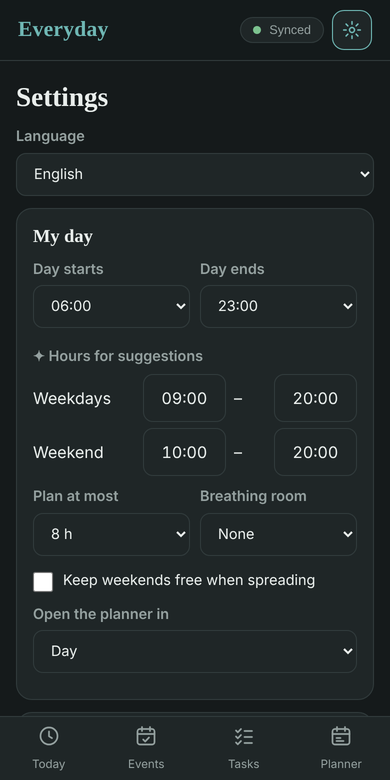
1. Install the app
Open the app's address in Chrome on your phone, or in any browser on a computer. On Android choose Install app (or Add to Home screen) from the browser menu; on a computer click the small install icon in the address bar. The app works without a connection too; new versions arrive on their own, and a bar offers to reload. The bottom of Settings shows which version you have.
2. Connect your own space on GitHub
This is where your data is stored and how your devices stay in sync.
- On GitHub, create a private, empty repository (a "repository" is just a folder on GitHub), for example
everyday-data. Don't copy anyone else's. - Create a personal access token (GitHub → Settings → Developer settings → Fine-grained tokens) that is allowed to read and write the Contents of that repository. A token is like a password made for apps.
- In Settings → GitHub sync, type your GitHub user name, the repository name and the token, then tap Save and test. The badge at the top of the app says Synced when it works.
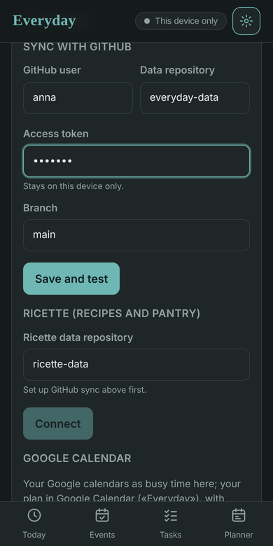
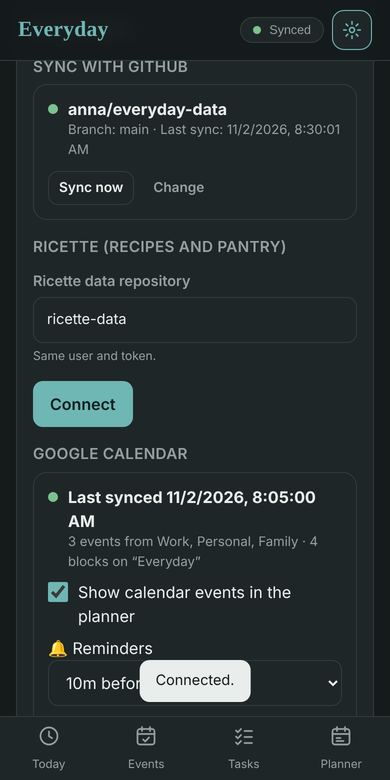
The token stays on the device. Do step 3 on every phone or computer you use: they all share the same data, within a minute of any change.
3. Optional: Ricette (recipes and pantry)
If you also use the Ricette app, type the name of its data repository in Settings → Ricette (the same token must be allowed to use it). Everyday then knows your recipes and your pantry, shares the shopping list with Ricette and can plan meals from recipes.
4. Optional: Google Calendar
This link runs on GitHub, not on your phone, so it needs a one-time setup on Google's side. Settings → Google Calendar lists the steps; in short, you create a small Google Cloud project, allow it to use your calendar, and store three "secrets" in your repository. Once done, your appointments appear in the app and your plan appears in Google Calendar, with reminders.
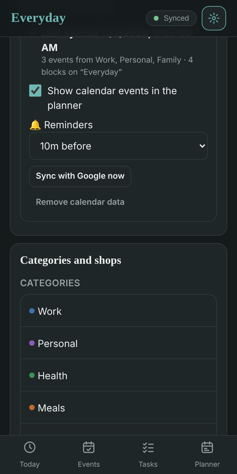
5. Travel
In Settings → Travel, type your home address and how you usually get around (walking, bike, public transport, car). That's all the app needs to add travel time to tasks that have a place. A Google Maps key is optional; without one the app uses free map services.
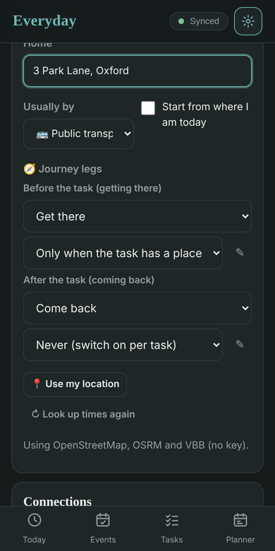
6. A second person
Each person needs their own repository, their own token and (if they want it) their own calendar setup. On their device, open the same app address and type their repository in Settings. If the device held someone else's data before, the app asks whether to start empty — choose that. Empty this device, in the same section, does the same at any later time.
The four tabs
| Tab | What it is for |
|---|---|
| Plan | Your days as a timeline (Day, Week, Month or List): blocks of time, calendar events, the tasks still to plan, and the buttons that plan for you. Tapping the app's name brings you back here. |
| Tasks | Everything to do: To plan, Planned, Done, and the Saved list of things that come back (gym, cleaning, meals). Search, filters, sorting, import from pasted text. |
| Shopping | The shopping list (shared with Ricette when connected), grouped by department, recipe or shop. |
| Settings | Language, planner hours, travel, shops, categories, sync, Ricette, Google Calendar, backup, version. |
The badge at the top right shows whether your data is in sync: Synced, Syncing, Offline, or Only on this device when you haven't connected yet.
Tasks
Adding a task
Type in the field at the top of the Tasks tab and press Enter. A few shortcuts save you from opening the task: Dentist 1h sets how long it takes, !1 to !5 how important it is (1 = very), #work the category. Import takes a whole list you paste in, one task per line.
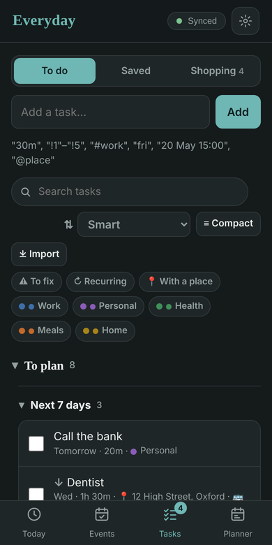
Tap a task to open it. The task is split into parts you can fold; anything you don't touch keeps a sensible value.
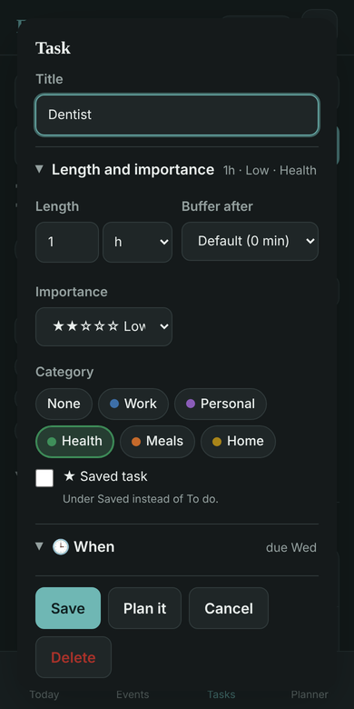
| Part | What you set there |
|---|---|
| Length and importance | How long it takes (30 minutes until you say otherwise), a buffer after it (a few spare minutes added to the block), how important it is, the category, and the Saved task switch. |
| When | A day and a time, a due date, repetition, the part of the day you prefer, things that must come first, time windows (e.g. office hours), the reminder. |
| Place | An address or a link. With a place, the app adds Get there (and, if you like, Come back) with the real travel time. |
| Steps | Parts of the task, each with its own length; on the plan every step gets its own time. Tap ⚓ on the step the task's time refers to (e.g. Workout at 19:00, so Get there goes before). |
| Checklist | Things to tick while doing it. |
| Rules | What should happen before or after, depending on how it goes (something to prepare before, a follow-up if it fails, a grocery run before a meal…). |
| Notes | Free text. |
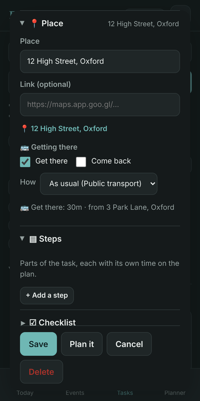
Saved tasks
Things that come back without a fixed rhythm — gym, cleaning, meals — live under Saved. They are normal tasks; the only difference is that they stay in that list and you put them on a day when you want them, from + Add → Saved on the plan. Tick Saved task inside a task to move it there and back.
Recurring tasks
In the When part choose every day, weekdays, weekly (pick the days) or monthly, with every N and an end date if you like. Give the task a day and a time and every occurrence of the coming weeks goes on the plan by itself (marked ↻). Change one occurrence from its block, or the whole series from the task; when you change or delete from a block the app asks only this one or this and the following.
Finding things
The search field looks through titles, notes, places, steps and checklists. Filters: To fix shows the tasks the planner still needs a detail for (a length, a place, your home address…), Recurring, With a place, or one category. Compact shows one line per task when the list gets long. You can also sort: smart, your own order (drag ⠿), due date, importance, length, category, date added.
Planning
The views
Day is a timeline from the start to the end of your day (you choose the hours in Settings → Planner): blocks for your tasks, calendar events in their colour, a red line for now. Week shows seven columns, Month a grid, List the coming days one after the other. Every day has a small busy bar: how full it is compared with the daily limit you set. ‹ › move in time, Today brings you back.
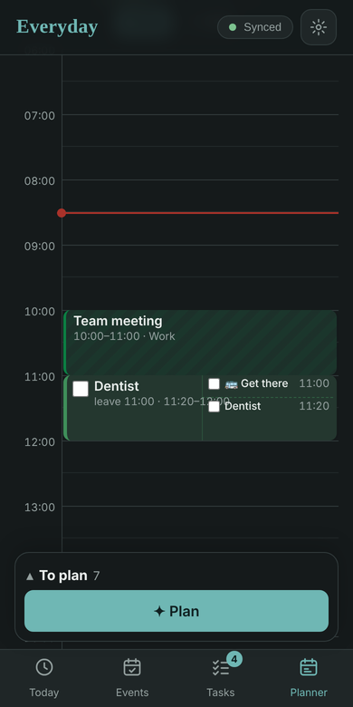
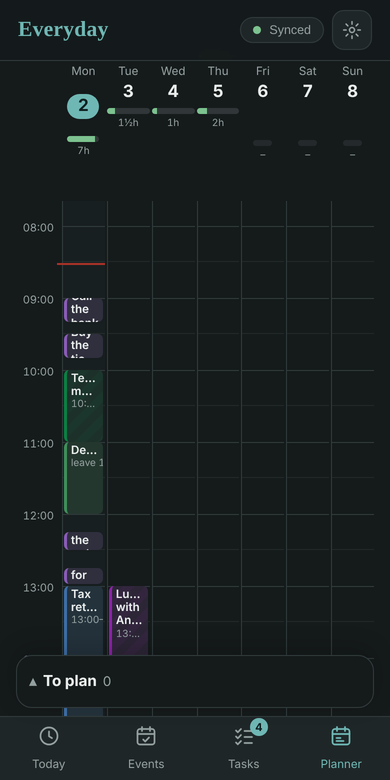
On a computer a tasks column sits beside the plan with what is still to plan (hide it with the Tasks switch; on a phone it is hidden by default). Tap a task there to put it in the next free slot, or drag it onto the timeline, a week day or a month cell.
Putting a task on a day by hand
- Tap an empty spot on the Day timeline: a new block at that time.
- + Add → a Task (new or from the list), a Saved one, a Meal, a Block, or a Template (a reusable day layout).
- Drag a block to move it; drag its bottom edge to make it longer or shorter. Tap a block to tick it, see its steps and checklist, or change it.
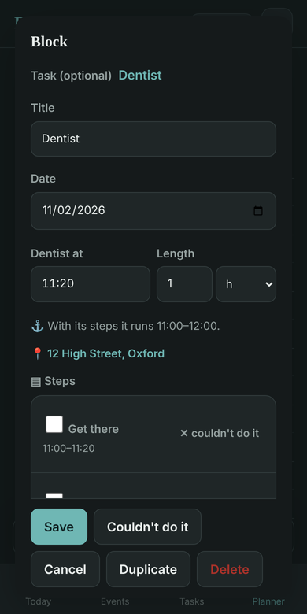
Letting the app plan
✦ Suggest a plan takes the tasks still to plan and spreads them over the period you choose (today, 3 days, a week, two weeks, a month…), inside your planning hours. It respects due dates, importance, your own order, time windows, things that must come first and the daily limit. You get a set of previews you can look at in every view (each says why it landed there); Add makes them real, or remove the ones you don't want first. Tasks that are already planned are kept apart, so you don't plan them twice.
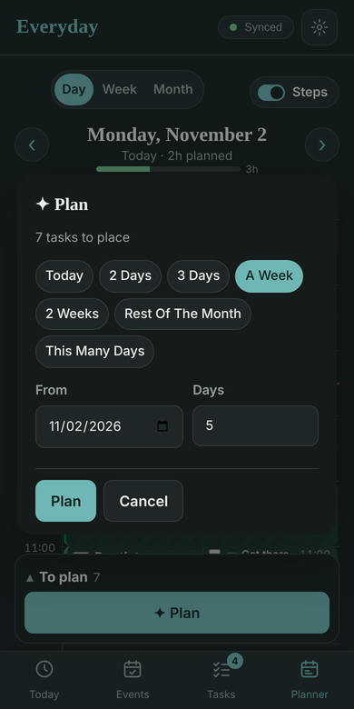
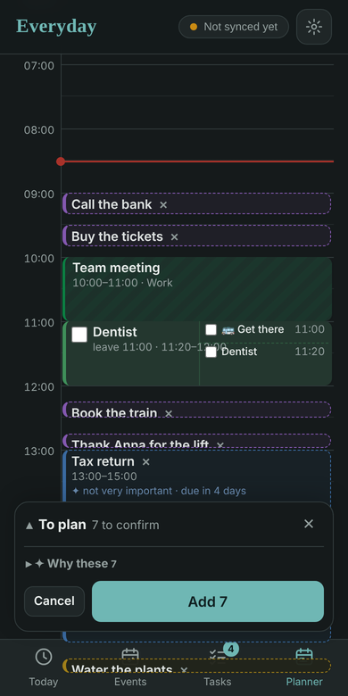
⇢ Assign opens the tray: the same tasks as a list you can search, sort and filter, to drag one by one onto days or times.
⏱ I have time (shown on today) answers "I have 40 minutes now, what fits?": it proposes tasks that fit in the gap until the next block.
If a block overlaps a calendar event, or comes before something it depends on, a warning appears with a Fix button. A task with a ⚠ is missing a detail the planner wants (length, place, home address, a travel time not found yet): To fix in the filters lists them.
Travel
Give a task a place and the app adds Get there before it, with the travel time from your home (or from the place of the previous task that day, if you don't go home in between) and the transport you chose. Come back after it is optional. Both are steps of the task: you see them on the block, you can tick them, and the block grows around the task so the task itself stays at its time.
In Settings → Travel → Journey legs you decide when each one is added: only when the task has a place, for every task (a task without a place then shows a "?" of 30 minutes as a reminder to account for the trip) or never (you switch it on per task). Each task can still say otherwise in its Place part, and pick its own transport.
The legs are saved tasks. Before the task (getting there) and After the task (coming back) each point to a saved task — Get there and Come back at first. You find them under Saved and can edit them from Settings: rename them, or give them steps — for example Pack the bag (5 min) and Travel. The step marked ⚓ (or the first one) receives the travel time from the map; the others keep their own length. You can also pick any other saved task for either leg.
Travel times come from free map services. With a Google Maps key in Settings, Google is used instead and public transport works everywhere. A "?" on a task means the time isn't known yet: the planner counts 30 minutes until it is, and ⚠ tells you when an address wasn't found. Start from where I am today uses your phone's location for the first trip of the day.
Meals, shopping list and grocery runs
With Ricette connected, + Add → Meal puts a meal on a day and lets you pick recipes for it; the preparation step takes its length from the recipes. When the time comes (or when you tick the check step) the app looks at the pantry: what's missing goes on the shopping list, and a grocery run is planned before the meal.
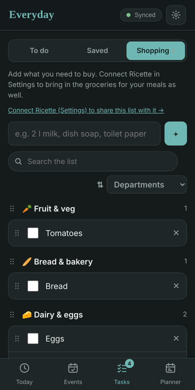
The Shopping tab is the same list as in Ricette, both ways: add, change, tick or delete here and it shows there within a minute. Group it by department, recipe or shop, sort it A–Z or by when things were added, search it. Tap an item to change its quantity, note or the shops that have it.
Shops (Settings → Shops) have opening hours and, if you like, an address. Say which shops carry an item and the grocery runs are planned when those shops are open, as one run or one per shop. A grocery run is a block like any other; ticking items as you buy them marks them bought in Ricette, and they go into the pantry when you put the shopping away there.
Google Calendar
Once set up, the link works both ways:
- Your calendars → Everyday. Appointments from the calendars you import appear on the plan in their colour, as busy time the planner works around. You can't change them here; a link opens them in Google Calendar.
- Everyday → Google Calendar. Everything you plan is written to a calendar called Everyday, with a reminder (the default from Settings → Google Calendar, or the task's own). Move or delete an Everyday event in Google Calendar and your plan follows.
The link refreshes every hour and a moment after you change your plan; Sync with Google now refreshes it by hand. The section in Settings shows when it last ran and how many appointments came in. Remove calendar data deletes the imported appointments from your repository — useful if a repository was copied from someone else's and shows their calendar.
A typical week
Sunday evening, ten minutes. Open Tasks and empty your head: type everything that is on your mind, with a length when you know it (Call the bank 20m, Tax return 2h !2). Give a place to the things that happen somewhere (Dentist, place: the practice's address). Put the week's meals on their days (+ Add → Meal) and pick the recipes. Then Plan → Week → ✦ Suggest a plan for the week: look at the previews, drag the one or two you want elsewhere, Add. Your appointments were already there, so nothing lands on top of them; the grocery run was placed before the first meal that needs it.
Every morning. Open the app: today's timeline shows the plan with the now line, and Google Calendar reminds you before each block. A ⚠ on a task means a detail is missing — fix it or ignore it. If the day looks too full, drag something to tomorrow; if an appointment moved, the warning tells you and Fix moves the block.
During the day. Tick blocks as you finish them (for long ones, tick the steps). A meeting ended early? ⏱ I have time finds something that fits in the gap. Something new came up? Type it and tap it: it goes in the next free slot. Buy groceries from the Shopping tab, ticking items as they go into the basket.
Evening. What you didn't do stays open: the next Suggest a plan picks it up again. Overdue tasks are grouped at the top of To plan, so they don't get lost.
Once in a while. Recurring things (gym Monday and Wednesday at 19:00, weekly cleaning) are set once and appear on their own; the Saved list holds what comes back without a rhythm. Settings → Planner is where you adjust the day's hours, the daily limit and the default buffer after tasks when the plans feel too tight or too loose.
Tips and troubleshooting
| Situation | What to do |
|---|---|
| The badge says Offline or shows an error | Check the connection, then Settings → GitHub sync → Sync now. A token that expired or lost access shows an error there; make a new one. |
| Two devices show different things | Wait a minute with the app open on both; every change syncs within a minute. Changes made at the same time are merged: the newest wins. |
| The app looks old | New versions arrive on their own; a bar offers to reload when one arrives while the app is open. The bottom of Settings shows the version. |
| Someone else's data shows on a device | Settings → GitHub sync → Empty this device, after checking that the repository there is the right one. If the repository itself was copied from someone else's, delete its files on GitHub first (for the calendar: Settings → Google Calendar → Remove calendar data). |
| A task shows ⚠ | Open it: it opens on the missing detail (a length, a place, the home address in Settings, or a travel time still being looked up). |
| Travel times are missing or wrong | Settings → Travel: check the home address, the transport and Look up times again. Addresses need a street, number and city to be found. |
| The plan is always too full | Settings → Planner: lower Plan at most, narrow the suggestion hours, add a default buffer after tasks. |
| I want my data | Settings → Download backup gives one file with everything; your repository on GitHub holds the same files. |